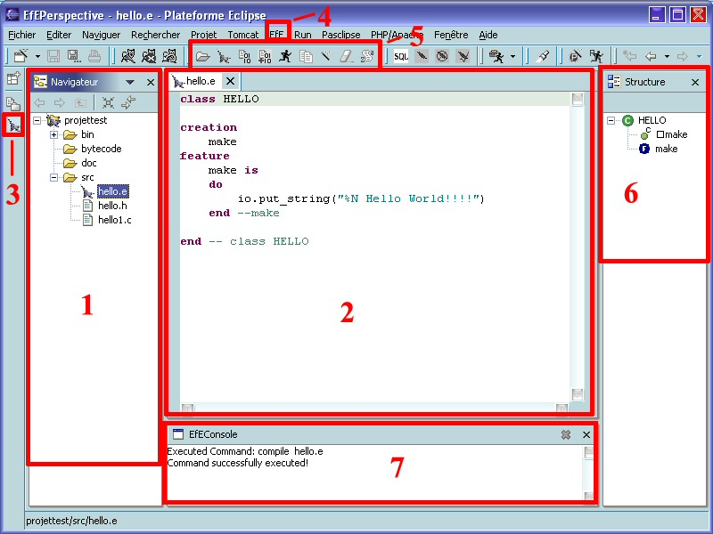

The EfE pespective is the following:

In this part of the interface, you can see anf manage your projects. These projects can be of any type: Eiffel or any Eclipse
project. This navigator offers the classicals functionalities of a file explorer.
It's important to know that what you see in the navigator is only a virtual view of your system file on your hard drive.
That's why some files are hidden in the navigateur. For example, the temporary file generated while the SmartEiffel
compilation don't appear in the navigateur. That's the mask system of Eclipse who hide the files. (See Eclipse documentation
for more details)
The editor allow you to edit files of any type.
This button display and hide the EfE Perspective. You must display the persective one time like explained in the geting started parts to make this button appears.
The EfE menu allow you to access to all the funcitonalities of the plugin apart from the preferences options. (See next section)
This toolbar is composed of 9 shortcuts to the essentials functions of this plugin:
-Create a new Eiffel Project
-Create a new Eiffel File
-Compile without options
-Compile with options
-Execute an .exe in the console
-Generate documentation
-Execute the Pretty command
-Execute the Clean command
-Display a java .class in a human readable way
This is a classical Object Inspector.
The console display the errors messages and the standard output when a command is executed.